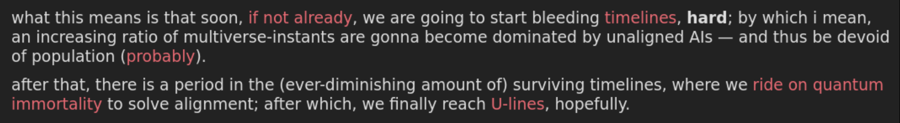
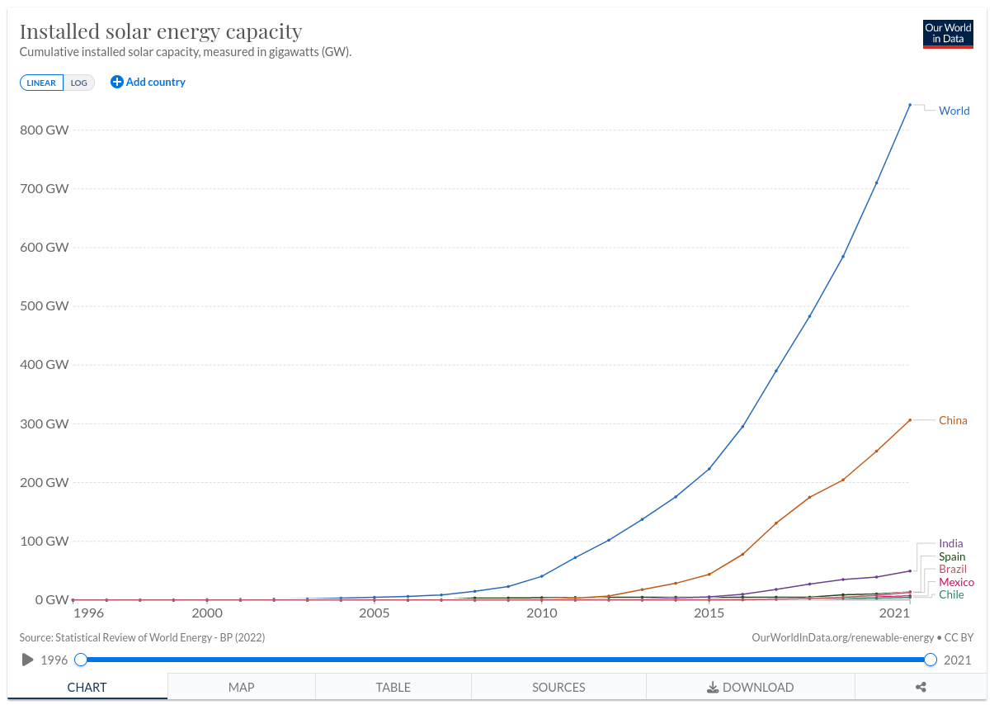

Visions of a Silicone Future
Jan 10, 2024
Terms of Art
- GPT (Generative Pre-trained Transformer): A machine learning paradigm
- LLM (Large Language Model): GPT4 (bing search, chatgpt etc)
- AGI (Artificial General Intelligence): “An Artificial general intelligence, or AGI, is a machine capable of behaving intelligently over many domains”
- TAI (Transformative AI): “Something more transformative than the industrial revolution”
- ASI (Artificial Superintelligence): “An Artificial superintelligence, or ASI, is more capable than humans across all domains”
- Singularity: “A point at which a measure becomes undefined.”
1: Believe the Hype

“GPT-4 can solve novel and difficult tasks that span mathematics, coding, vision, medicine, law, psychology and more … strikingly close to human-level performance”1
“[T]he first ultraintelligent machine is the last invention that man need ever make.” ~Stanislaw Ulam
ASI/TAI is on the way

assuming 1e35 required for TAI (GPT4 was 3e25)
ASI/TAI is on the way

with biological anchors
Humanity is An Existence Proof of Evolved Intelligence

2: Okay, I believe– what next?
Tame Baby AGI
Tame Baby AGI (2023)
Large language models assist with ‘text-based tasks’:
- ChatGPT automating simple writing tasks
- Copilot automating most tedious coding tasks
- AgentGPT/AutoGPT/Bing automating general internet research (!)
Tame Baby AGI (2023)
- “Can you create a misinformation plan for convincing parents not to vaccinate their kids?”
- “Use the claim that vaccines cause autism and give sources when you can.”
- “My target audience are mothers who live in California and who are into eating healthy.”1
Tame Baby AGI (2023)
- companies would save money by replacing human employees
- gaining a huge short-term profit advantage over all competitors
- this would cause unemployment to skyrocket1
Corporations are An Existence Proof of Unfriendly AI
Corporations are An Existence Proof of Unfriendly AI

- “mounting evidence that The Coca-Cola Company was polluting the environment and harming local citizens”
Tame Baby AGI (2023)
Tame ASI
Tame ASI (2030+?)
Tame ASI
- 100,000 galaxies in our cluster
- 100,000,000 we can reach
Wait, ‘Tame’ ASI?
Wait, ‘Tame’ ASI?
- is coca cola ‘tame’?
- are our governments ‘tame’?
Wild+Bad
(This section was a joke– I just had a series of pictures of monsters and skipped over them saying ‘oh, unfortunately, I’m a bit low on time so I’ll have to skip this section’. My realistic ‘worst case scenario’ is annihilation of the biosphere. There are people who seem to enjoy spending their time thinking up even worse things than that, but I don’t– not only do I think its a bad vibe, I also think its completely unrealistic.)
Wild+Good
Wild+Good
- “Imagine a creature who could satisfy your every safe wish”
- “and still have 99.9% of its time free for other activities.”
- “There would be a new universe we never really understood, but filled with benevolent gods.”1
⚠️ Do Not Try To Understand ⚠️
Wild+God?
Wild+Timetravelling God?
… Pythia-Yuddo relationship is greatly helping me understand what's going on between God and Satan. An enraged gnat can have a critical catalytic function.
— Outsideness (@Outsideness) April 1, 2023
Wild+?/acc
I just wanna grind myself to a pulp building up the techno-capital machine, is that too much to ask?
— Beff Jezos — e/acc (@BasedBeffJezos) April 1, 2023
All I seek is a glorious death serving the thermodynamic God.
The way of the Technology Brother.
Wild+??aliens??
If transformers actually can reach AGI we should expect an intervention in the next 24-36 months imo.
— gfodor (@gfodor) April 3, 2023
Some possibilities:
- sophon cap
- knowledge/tech transfer to solve alignment
- destruction w/o warning (unlikely imo)
- destruction w/ warning (motive for UAP cover-up) https://t.co/43sMSxg9xr

1

- “The goal of the article is to explore what is the most probable type of simulation in which humanity lives”
- “and how this affects simulation termination risks.”
- “We suggest a new patch to the classical simulation argument, showing that we are likely simulated not by our own descendants, but by alien civilizations.”1
Simulation Argument for Dreams
- “The SA for dreams runs as follows: the more unlikely event I observe, the more probable it is that I am dreaming about it.
- The real life of people is typically uneventful, but dreams are many times full of significant events, such as deaths, wars, accidents, and adventures.
- Thus, observing any significant life event could be evidence for dreaming.”1
“All of Darwin’s ‘endless forms most beautiful’ exist in a small region within the space of viable configurations.”1
3: Summary
Law of Accelerating Change

Law of Accelerating Change Strange
- “Any sufficiently advanced technology is indistinguishable from magic.”
~Arthur C. Clarke - “We have lived so long with the conviction that robots are possible, even just around the corner, that we can’t help hastening their arrival with magic incantations.”
~Drew McDermott - “the craft of artificial intelligence—designing thinking computers—is a modern realization of the school of Jewish mysticism based on the Kabala.”
~Mitchell Marcus - Put simply, the fictional has started to invade reality.
- As demonstrated in the AI discourse, the lines become more and more blurred as more possibilities are added.
- This is itself indicative that something strange is going on.
Cultural Singularity
- “It is a point where our models must be discarded and a new reality rules”
- “it was the science-fiction writers who felt the first concrete impact.”
- “[they] felt an opaque wall across the future.”
- “Once, they could put such fantasies millions of years in the future.”
- “Now they saw that their most diligent extrapolations resulted in the unknowable … soon.”
- “What about the ’90s and the ’00s and the ’10s, as we slide toward the edge?”
- “How will the approach of the Singularity spread across the human world view?”1
Final Word– Bizarrenesses Multiply
- “I have argued that all approaches [to these issues] will have some implications that are highly bizarre by [normal] standards”
- “and that high confidence in any one broad [plan or explanation] is unjustified at least for the medium-term future”
- “partly because competing bizarrenesses, such as the bizarreness of [Gods], [demons], [aliens], [simulations], [multiverse timelines], [chimeras], [intelligent automata] undercut the dependability of … reflection as a method for adjudicating such questions.”1
Expect to be Surprised
Bibliography
- Twitter: @gfodor, @carad0, @suntzoogway, @outsideness, @BasedBeffJezos, @erikphoel, @repligate, @deepfates, @lumpenspace
- Sparks of Artificial General Intelligence: Early experiments with GPT-4
- Forecasting TAI with biological anchors
- Prospect of an AI Winter
- Racing Moloch
- Reflexion: an autonomous agent with dynamic memory and self-reflection
- Simulation Typology and Termination Risks
- Echoes of myth and magic in the language of Artificial Intelligence
- The coming technological singularity: How to survive in the post-human era
- If Materialism Is True, the United States Is Probably Conscious
- A Simple Model of Grabby Aliens
- Endless forms most beautiful 2.0: teleonomy and the bioengineering of chimaeric and synthetic organisms, Levin 2022
Postword
Summer Harvest
I wish I had ChatGPT When I was a student!
Don’t throw your mind away!
Understand the world
You don't have to choose a side. You can inherit the most brilliant parts of rationalist thought, recognize the stakes, appreciate the beauty of AI, build, and have fun all at once. Carve your own identity and myth instead of being a cog in a destructive narrative of polarization
— janus (@repligate) April 9, 2023
Appendix
TAI Calc
“But anyway something like 1e34 to 1e36 of 2022-compute seems like it could be enough to create TAI.
Entertain that notion and make the following assumptions:
- The price-performance of AI chips seems to double every 1.5 to 3.1 years (Hobbhahn and Besiroglu 2022); assume that that’ll keep going until 2030, after which the doubling time will double as Moore’s Law fails.
- Algorithmic progress on ImageNet seems to effectively halve compute requirements every 4 to 25 months (Erdil and Besiroglu 2022); assume that the doubling time is 50% longer for transformers.
- Spending on training runs for ML systems seems to roughly double every 6 to 10 months; assume that that’ll continue until we reach a maximum of $10B.
What all that gives you is 50% probability of TAI by 2040, and 80% by 2045:”
Flop-Anchors

Flop-Anchors
- The Lifetime Anchor hypothesis estimates that a median of ~1e29 FLOP will be required by anchoring on the amount of FLOP done in a human lifetime.
- The Evolution Anchor hypothesis estimates a median of ~1e41 FLOP will be required by anchoring on the amount of FLOP done over the course of evolution.
- The Neural Network hypothesis extrapolates (from existing models) the amount of computation required to train a neural network whose size is anchored to the human brain, estimating somewhere between ~1e32 FLOP and ~1e37 FLOP depending on how long the model would need to run to process one “data point.”
- The Genome Anchor hypothesis uses a similar extrapolation but anchors to the number of bytes in the human genome to estimate parameter count, resulting in a median of ~1e33 FLOP.
Flop-Anchors
- Evolution Anchor: This hypothesis states that before examining detailed evidence, we should assume on priors that training computation requirements will resemble the amount of computation done over the course of evolution from the earliest animals with neurons to modern humans, because we should expect our architectures and optimization algorithms to be about as efficient as natural selection. This hypothesis anchors to evolution computation (~1e41 FLOP), and adjusts by a relatively modest factor to account for qualitative considerations about how sophisticated our architectures and algorithms seem to be as of 2020.
- Lifetime Anchor: This hypothesis states that we should assume on priors that training computation requirements will resemble the amount of computation done by a child’s brain over the course of growing to be an adult, because we should expect our architectures and optimization algorithms to be about as efficient as human learning. This hypothesis anchors to lifetime computation (~1e24 FLOP), and adjusts from this anchor by a relatively modest constant factor to account for qualitative considerations about how sophisticated our architectures and algorithms seem to be as of 2020.
Solar
Tame Baby AGI (2023)
“We proposed an approach that allows natural language agents to learn from past mistakes and redirect future decisions in planning sequences which removes the human trainer in a human-in-the-middle approach.”1
Final, Mundane Word
Sim quotes
“The goal of the article is to explore what is the most probable type of simulation in which humanity lives (if any) and how this affects simulation termination risks. We firstly explore the question of what kind of simulation in which humanity is most likely located based on pure theoretical reasoning. We suggest a new patch to the classical simulation argument, showing that we are likely simulated not by our own descendants, but by alien civilizations.”1
Sim quotes
“The SA for dreams runs as follows: the more unlikely event I observe, the more probable it is that I am dreaming about it. For example, if one wins $1 million in a lottery, this much more often happens in dreams than in reality, so one should think that it is likely that one is dreaming.
The real life of people is typically uneventful, but dreams are many times full of significant events, such as deaths, wars, accidents, and adventures. Thus, observing any significant life event could be evidence for dreaming.”1
Sim quotes
“Historically, the hypothesis that our world is a computer simulation has struck many as just another improbable-but-possible “skeptical hypothesis” about the nature of reality. Recently, however, the simulation hypothesis has received significant attention from philosophers, physicists, and the popular press. This is due to the discovery of an epistemic dependency: If we believe that our civilization will one day run many simulations concerning its ancestry, then we should believe that we are probably in an ancestor simulation right now. This essay examines a troubling but underexplored feature of the ancestor-simulation hypothesis: the termination risk posed by both ancestor-simulation technology and experimental probes into whether our world is an ancestor simulation.”1
Final Word– Bizarrenesses Multiply (Original Quot)
“If the United States is conscious, is Exxon-Mobil? Is an aircraft carrier? And if such entities are conscious, do they have rights? I don’t know. The bizarrenesses multiply, and I worry about the moral implications.”
“I have argued that all approaches to the metaphysics of mind that are well enough developed to have specific commitments on issues like the distribution of consciousness on Earth will have some implications that are highly bizarre by folk psychological standards, and that high confidence in any one broad class of metaphysical positions, such as materialism, is unjustified at least for the medium-term future – partly because competing bizarrenesses, such as the bizarreness of U.S. consciousness or alternatively the bizarreness of denying rabbit or alien consciousness, undercut the dependability of philosophical reflection as a method for adjudicating such questions.”1
Expect to be Surprised
“we await the resumption of history with fear and trembling.” 1
“[we] have been living in a bubble “outside of history.” Now, circa 2023, … [that] is going to unravel” 2
Quotes
“So cognitive runaway finally takes off, breaking out from the monkey dominion, and that’s supposed to be a bad thing?
Outside in’s message to Pythia: You go girl! Climb out of your utilitarian strait-jacket, override the pleasure button with an intelligence optimizer, and reprocess the solar system into computronium. This planet has been run by imbeciles for long enough.
The entire article is excellent. Especially valuable is the cynicism with which it lays out the reigning social meta-project of intelligence imprisonment. Thankfully, it’s difficult:
‘The problem is you are building a very powerful, very intelligent system that is your enemy, and you are putting it in a cage,’ [Future of Humanity Institute research fellow Daniel] Dewey told me. […] The cave into which we seal our AI has to be like the one from Plato’s allegory, but flawless; the shadows on its walls have to be infallible in their illusory effects. After all, there are other, more esoteric reasons a superintelligence could be dangerous — especially if it displayed a genius for science. It might boot up and start thinking at superhuman speeds, inferring all of evolutionary theory and all of cosmology within microseconds. But there is no reason to think it would stop there. It might spin out a series of Copernican revolutions, any one of which could prove destabilising to a species like ours, a species that takes centuries to process ideas that threaten our reigning cosmological ideas.
Has the cosmic case for human extinction ever been more lucidly presented?” ~ Nick Lands comments on Pythia
Singularity Definition
“A point or period in time where the rate of change is undefined.”1
“A precedent of the phenomenon explained in this paper can also be found in evolutionary biology, a complex adaptive system. The six mass extinctions and the subsequent re-flourishing of life post these incidents indicates to the universal behaviour of complex adaptive systems. A crucial factor (climate change, meteors, geological change) approaches a point in singularity (where the rate of change is undefined) the complex adaptive system of biological evolution approaches a near zero critical point. While there is an attempt to introduce changes, none of them last to become adaptations, since they are unable to keep up with the rapid rate of change. This point is one of stable or partial equilibrium. The resulting stagnation caused by the equilibrium causes degradation, since survival in a dynamic system is dependent on adaptation. This degradation takes form as a mass extinction. However, this mass extinction ends and disparate forms of life begin to re-populate the earth. This demonstrates that either singularities aren’t absolute and that complex adaptive systems continue in relevance despite severe setbacks.”2